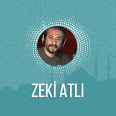

Zeki Atlı
Zeki Atlı
-
1.Cüz
Birinci cüz Fatiha Suresi ile başlar ve Bakara Suresi 141.ayete kadar devam eder. -
2.Cüz
İkinci cüz 141 - 252 ayetler arası olup, Bakara Suresi'nin devamıdır. -
3.Cüz
Üçüncü cüz Bakara Suresi 253. Ayetle başlar ve 286. ayetle sure biter. Ardından Âli İmran Suresi ile devam eder ve 91. ayetle cüz biter. -
4.Cüz
Dördüncü cüz Âli İmran Suresi 92.ayet ile başlayıp 200 âyet ile sure sonlanır. Daha sonra Nisa Suresi ile devam eder ve 23.ayet ile cüz biter. -
5.Cüz
Beşinci cüz Nisa Suresi 24. ayetle başlar ve aynı surenin 147. ayeti ile biter. -
6.Cüz
Altıncı cüz Nisa Suresi 148 - 176 ve Maide Suresi 82. ayetler arasıdır. -
7.Cüz
Yedinci cüzde Maide Suresi 83-120 ayetler ile Enam Suresi 1-110 ayetleri vardır. -
8.Cüz
Sekizinci cüz En'am Suresi 111 ile başlar ve 165. ayet ile sure biter. Ardından Araf Suresi başlar 87. ayetle cüz biter. -
9.Cüz
Dokuzuncu cüz A'raf Suresi 88.ayetten Enfal Suresi 40.ayete kadardır. -
10.Cüz
Onuncu cüz Enfal Suresi 41.ayetten Tevbe Suresi 93.ayete kadardır. -
11.Cüz
On birinci cüz Tevbe Sûresi 94. ayetle başlar Hud Sûresi 5. ayetle biter. -
12.Cüz
On ikinci cüzde Hud Sûresi'nin 1-123 ayetleri ve Yusuf Sûresi'nin 1- 52 ayetleri bulunur. -
13.Cüz
On üçüncü cüz Yusuf Sûresi 53. ayetle başlayıp İbrahim Sûresi 52. ayetle biter. Arada Ra'd Sûresi de vardır. -
14.Cüz
Bu cüzde Hicr Sûresi'nin ve Nahl Sûresi'nin bütün ayetleri bulunur. -
15.Cüz
Bu cüzde İsra Sûresi'nin tamamı ve Kehf Sûresi'nin 82.ayetine kadar olan bölümü bulunur. -
16.Cüz
Kehf Suresi 75.ayetten Taha Suresi 135.ayete kadar -
17.Cüz
Bu cüzde Kehf Sûresi'nin devamıyla beraber Meryem ve Taha Sûresi bulunur. -
18.Cüz
Mü'minun Suresi 1.ayetten Furkan Suresi 20.ayete kadar -
19.Cüz
On dokuzuncu cüz Furkan Sûresi 21.ayetle başlar. Sonrasında Şuara Sûresi'nin tamamı gelir ve Neml Sûresi 55. ayetle cüz biter. -
20.Cüz
Yirminci cüz, Neml Suresi, Kasas Suresi ve Ankebut Suresi'nden oluşmaktadır. Bu cüz, 381'inci, 382'inci, 383'üncü ve 384'üncü sayfalar Neml Suresi'nin son sayfalarını, 384 ile 395 arasındaki sayfalar Kasas Suresi'ni ve 395'ten itibaren Ankebut Suresi'nin ilk sayfalarını kapsamaktadır. 20. cüz 20 sayfadan oluşmaktadır. -
21.Cüz
Yirmi birinci cüz, Ankebut Suresi, Rum Suresi, Lokman Suresi, Secde Suresi ve Ahzap Suresi'nden oluşmaktadır. -
22.Cüz
Yirmi ikinci cüzde Ahzab Suresi, Sebe Suresi, Fatır Suresi ve Yasin Suresi yer almaktadır. -
23.Cüz
Yirmi üçüncü cüzde Yasin Suresi, Saffat Suresi, Sad Suresi ve Zümer Suresi yer almaktadır. -
24.Cüz
Yirmi dördüncü cüzde Zümer Suresi, Mü'min Suresi ve Fussilet Suresi yer almaktadır. -
25.Cüz
Yirmi beşinci cüzde Fussilet Suresi, Şura Suresi, Zuhruf Suresi, Duhan Suresi ve Casiye Suresi yer almaktadır. -
26.Cüz
Yirmi altıncı cüzde Casiye Suresi, Ahkaf Suresi, Muhammed Suresi, Fetih Suresi, Hucurat Suresi, Kaf Suresi ve Zariyat Suresi yer almaktadır. -
27.Cüz
Yirmi yedinci cüz Zariyat Suresi'nin son sayfalarını, Tur Suresi, Necm Suresi, Kamer Suresi, Rahman Suresi, Vakıa Suresi, ve Hadid Suresi'nin ilk sayfalarını kapsamaktadır. -
28.Cüz
Mücâdele Suresi 1.ayetten Tahrîm Suresi 12.ayete kadar -
29.Cüz
Yirmi dokuzuncu cüzde Mülk Suresi, Kalem Suresi, Hakka Suresi, Me’aric Suresi, Nûh Suresi, Cin Suresi, Müezzemmil Suresi, Muddesir Suresi, Kıyamet Suresi, İnsan Suresi, Murselat Suresi bulunmaktadır. -
30.Cüz
Otuzuncu cüzde Nebe’ Suresi, Nazi’at Suresi, Abese Suresi, Tekvir Suresi, İnfitar Suresi, Mutaffifin Suresi, İnşikak Suresi, Bürüç Suresi, Tarık Suresi, A’la Suresi, Ğaşiye Suresi, Fecr Suresi, Beled Suresi, Şems Suresi, Leyl Suresi, Duha Suresi, İnşirah Suresi, Tin Suresi, Alak Suresi, Kadr Suresi, Beyyine Suresi , Zilzal Suresi , Adiyat Suresi , Karia Suresi, Tekasür Suresi, Asr Suresi, Hümeze Suresi, Fil Suresi, Kureyş Suresi, Maun Suresi, Kevser Suresi, Kafirun Suresi, Nasr Suresi, Tebbet Suresi, İhlas Suresi, Felak Suresi, Nas Suresi bulunmaktadır.